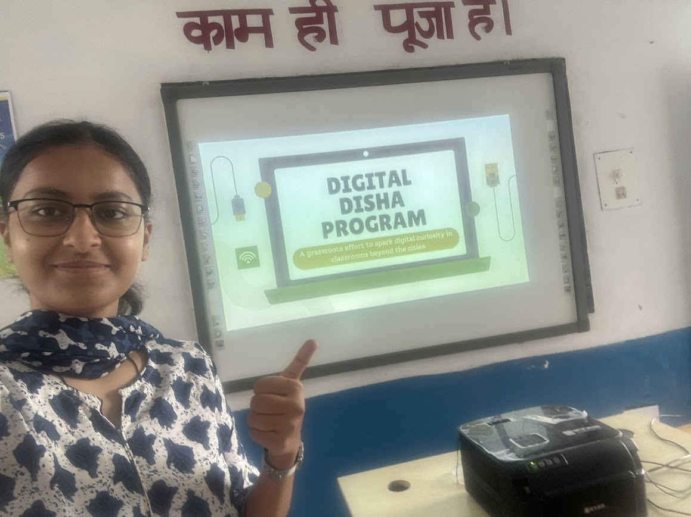

FOUNDER • DIGITAL LITERACY INITIATIVE
Digital Disha
A student-led digital literacy initiative working to make computer education more accessible in rural and less connected communities.

How it began
After months of planning and refining, Digital Disha officially came to life.
I was born and raised in Kullu, a small town nestled in the Himalayas, where access to computers and digital education was rare. Because of that, it has always been one of my goals to make computer education more accessible to everyone, no matter where they live.
Digital Disha is my student-led initiative to promote digital literacy across rural India.
It was launched at Government High School, Kotli, a remote village in the lower Himalayas.
students directly impacted
cohorts launched
means “direction” in Hindi, which reflects the deeper purpose of the initiative
The first cohort
The First cohort was held at Government High School, Kotli, Mandi District of Himachal Pradesh, India
During the first cohort, 24 students of grades 9 and 10 were introduced to computers and basic digital tools over a few days of hands-on learning. They used a computer for the first time.
The goal was not only to teach tools, but to provide direction and confidence by encouraging students to explore technology for themselves too.
For me, that is the heart of Digital Disha. It is not only about exposure. It is about possibility.
The first cohort sparked local conversations, earned support from educators, and became the beginning of something I hope will continue to grow.
Check out the first cohort aftermovie to learn more!

What it means to me
Digital Disha began as a promise to my community and to many other communities like mine, where computer education can still feel far away.
The initiative received support from educators, including a letter of recommendation from Headmaster Mr. Nihal Singh, and recognition from leaders such as Dr. Kiran Bedi.
More than anything, this project represents the kind of work I want to keep doing: meaningful, rooted, practical, and built with people in mind.

Explore more
You can watch the official launch aftermovie and access more material related to Digital Disha below.